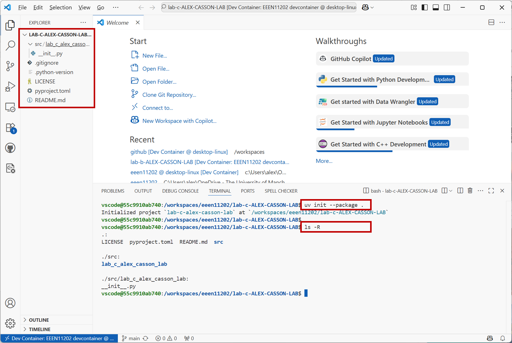
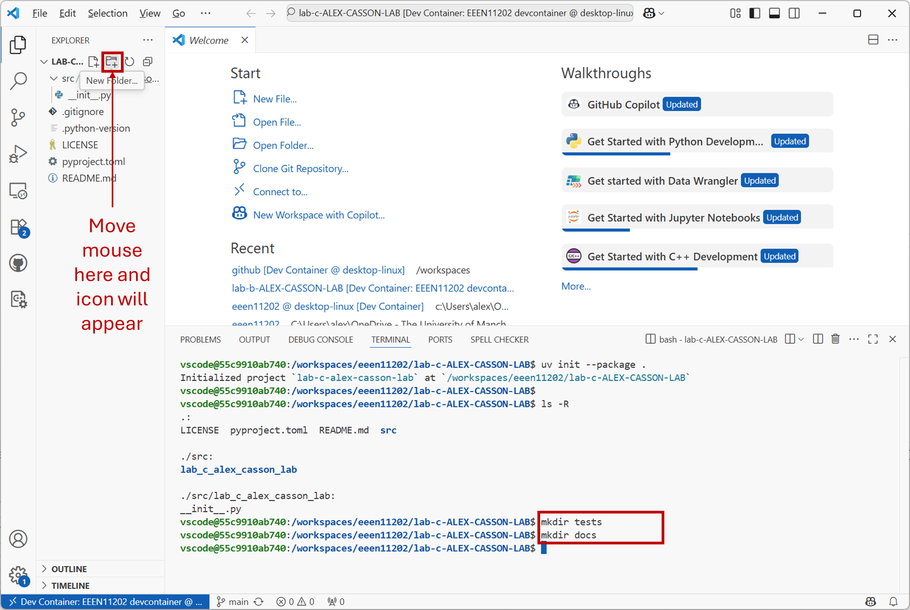

3.2.1. Setting up a Python project¶
3.2.1.1. Starting the programming environment¶
First we need to start VSCode in our devcontainer. There’s nothing new here. It’s exactly the same as in Week 2.
The Github Classroom link for Lab C is:
GitHub Classroom link
Follow the instructions as in Lab B to add this repository to your account and to open it in VSCode. Everything is exactly the same as in Lab B, we’re just doing Lab C now.
3.2.1.2. Making a blank Python project¶
We make a project at the computer’s terminal, not within Python. With the terminal in VSCode, enter:
$ uv init --package .
This will create a new project in the current folder. Using the file explorer you should be able to see that a
pyproject.tomlfile has been created, and a folder calledsrcto contain the code. You can list the file present using commands at the terminal if you prefer. Usingls -Rwill list everything that’s present. Your view should look similar to the below.
You’ll see that it hasn’t made a
testsfolder for storing our tests in, or adocsfolder for documentation. Make these withWe’ll make these later, but for now we can ignore them. Make these using VSCode by clicking the
New Folder...button that appears when you hover over the folder name. Or, making them using the command line by enterting the two commands:$ mkdir tests $ mkdir docs
Your view should look similar to the below. We’re not actually going to use these folders in this lab, but we now have a complete project structure. We’ll look at adding tests in Lab D

Aside
There are Python tools such as cookiecutter that can automate this process further, so you don’t need to make these additional items by hand.
{kind=link}
{kind=link}
3.2.1.3. Exploring the project¶
We’re now ready to start writing our project code. First, we’ll explore the project files a little bit. Open the
pyproject.tomlfile in VSCode by clicking on it in the file explorer. It will contain text similar to the below (the exact details may vary on your computer).[project] name = "lab-c-alex-casson-lab" version = "0.1.0" description = "Add your description here" readme = "README.md" authors = [ { name = "Alex Casson", email = "alex.casson@manchester.ac.uk" } ] requires-python = ">=3.13" dependencies = [] [project.scripts] lab-c-alex-casson-lab = "lab_c_alex_casson_lab:main" [build-system] requires = ["hatchling"] build-backend = "hatchling.build"
Information is arranged into sections. We’ll ignore the
[project.scripts]and[build-system]sections. They’re for more advanced use. In the[project]section, it gives the project a name and a version. It list the authors, so anyone using or maintaing the project in the future can see who wrote it. It also lists the minimum version of Python that is needed to run the code. We haven’t installed any external modules yet, so thedependenciesentry is empty.we can see the name of the project, the version, and so on. The
dependenciessection is where we will list the external modules that are needed for our code to work. For now, it’s empty.You can edit the
pyproject.tomlfile by hand if you want to, but in many cases won’t need to. Things will be automatically added to it for us, and it can just exist in the background, keeping a record of the settings needed for the Python project.Note that we haven’t actually made a virtual environment as we did in Lab B. This will now be done for us automatically in the background, using the settings in
pyproject.toml.
3.2.1.4. Adding dependencies¶
In the next part of the lab we’re going to use numpy and scipy, as very commonly used Python modules in Engineering. Let’s add them to the project now so we can see what happens to pyproject.toml while we have it open.
At the command line enter
$ uv add numpy scipy
This will make a new virtual environment, and install the
numpyandscipymodules into it. It will also update thepyproject.tomlfile to include these modules as dependencies. If you still havepyproject.tomlopen, it may take a minute or two to update, but you should see that thedependenciessection now includes these modules. We now have a record of exactly which versions ofnumpyandscipyare needed for the code to work. You can of course change this to use specific versions, or different versions if you wanted. Here we’ve just asked it to use the latest version. You may well see higher version numbers if there have been updates to these modules since this course was written.Your VSCode should now look similar to the below. Again, you don’t need to edit this file by hand, we’re just viewing it to see what’s happening behind the scenes.

If your code has more dependencies you can add them in the same way.¶
3.2.1.5. Hello world example¶
As with Lab B, we’ve taken quite a few steps to get to the point where we can start writing code. This was deliberate - we could have jumped straight in for a starting point like this, but we wanted to starting building techniques that will be useful as your projects get larger. Once you’re used to them they’re quite quick to do. Anyway, we’re now ready to write some code.
Make a new file called hello_world.py in the src folder.